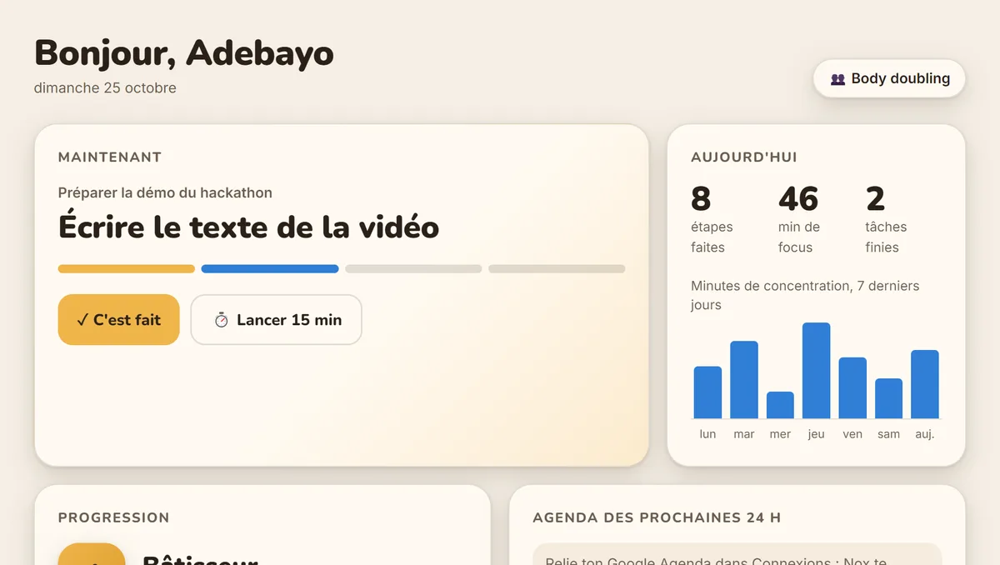

Mettre une application en ligne et l'y garder : conteneurs, cloud, pipelines CI/CD qui testent et déploient chaque modification, supervision.
DockerKubernetesAWS EC2GitLab CI/CDGitHub ActionsPrometheus
Exemple : le pipeline public de ce site →Des infrastructures qui tiennent, des déploiements qui partent seuls et des agents IA qui font gagner du temps, du besoin de départ à la mise en ligne.
Cloud, DevOps & IA · Rennes
Faites défilerTrois domaines, un même fil : automatiser.
Mettre une application en ligne et l'y garder : conteneurs, cloud, pipelines CI/CD qui testent et déploient chaque modification, supervision.
Des sites et des applications rapides, accessibles et bien référencés, dont le contenu reste simple à mettre à jour.
Des agents reliés aux outils du quotidien (e-mail, agenda, messagerie) et des workflows qui prennent en charge les tâches répétitives.
Les outils avec lesquels je construis, rangés en sept familles. Attrapez-les et lancez-les, ou choisissez une famille.
Automatiser le chemin entre une modification de code et sa mise en ligne.
Empaqueter les applications et les faire tourner de façon fiable.
Héberger et décrire l'infrastructure, sans rien configurer à la main.
Administrer les serveurs, puis surveiller que tout tient dans la durée.
Faire circuler les données entre les machines et les services.
Concevoir des agents et des automatisations qui répondent à un besoin métier précis.
Construire les sites et applications que les équipes utilisent.
Partir du besoin réel, livrer vite quelque chose qui fonctionne, et laisser une équipe autonome.
Comprendre le métier, l'existant et ce qui fait perdre du temps, puis l'écrire noir sur blanc.
Construire rapidement une première version qui fonctionne, pour valider l'idée avant d'investir.
Brancher le pipeline, décrire l'infrastructure et confier les tâches répétitives à un agent.
Superviser, documenter et former l'équipe pour qu'elle reste autonome au quotidien.
Chaque fiche raconte un projet : le problème de départ, ce que j'ai construit, et ce qui tourne aujourd'hui.
Un agent IA vocal pour Windows qui aide les personnes TDAH à passer à l'action : il parle en premier, découpe la tâche en micro-étapes de 2 à 10 minutes et lance le minuteur.

Le site d'un cabinet de cybersécurité à Cotonou : six pôles d'expertise, masterclasses et demande d'audit, en ligne sur continentalit.org.

Le site bilingue et accessible de l'exposition sur l'IA du Musée des Transmissions, à Rennes, et son jeu Floriale.

Expériences et formations, versionnées comme un dépôt Git. Choisissez une branche, puis ouvrez un commit pour voir ce qu'il a apporté.
ExpoIA / TIARe · Rennes · oct. 2025 – mai 2026 · Projet de master
Projet France 2030 / ANR pour le Musée des Transmissions, confié dans le cadre du master : la formation et l'expérience se rejoignent.
ISTIC · Université de Rennes · 2025 – aujourd'hui · Master
Formation spécialisée en infrastructures cloud, réseaux et systèmes distribués.
RHS Conseil-Formation · Lyon · mai – juin 2025 · Stage
Mission menée à distance pour un cabinet de conseil et de formation.
ISTIC · Université de Rennes · 2024 – 2025 · Licence
L'année où j'ai choisi de construire mon parcours vers le Cloud et le DevOps.
ICT-Consulting · déc. 2023 – juin 2025 · CDD
Conception, déploiement et maintenance de sites et d'applications web pour des clients.
SPTIC · Université d'Abomey-Calavi · mai – sept. 2023 · Stage
Stage au service des technologies de l'information et de la communication de l'université.
PayPlus Africa · Cotonou · juil. – août 2022 · Stage
Premier stage en entreprise, entre web, mobile et formation.
ENEAM · Université d'Abomey-Calavi · 2020 – 2023 · Licence
Formation en informatique appliquée à la gestion des organisations. Le premier commit.
Participant au programme. Notre projet d'équipe TODJUMI, une plateforme de suivi des patients pour les médecins béninois, a été sélectionné.
Obtenu via Pépite Bretagne pour le projet VirtuStage.
Ouvert aux missions ponctuelles et à une alternance M2 en 2027.